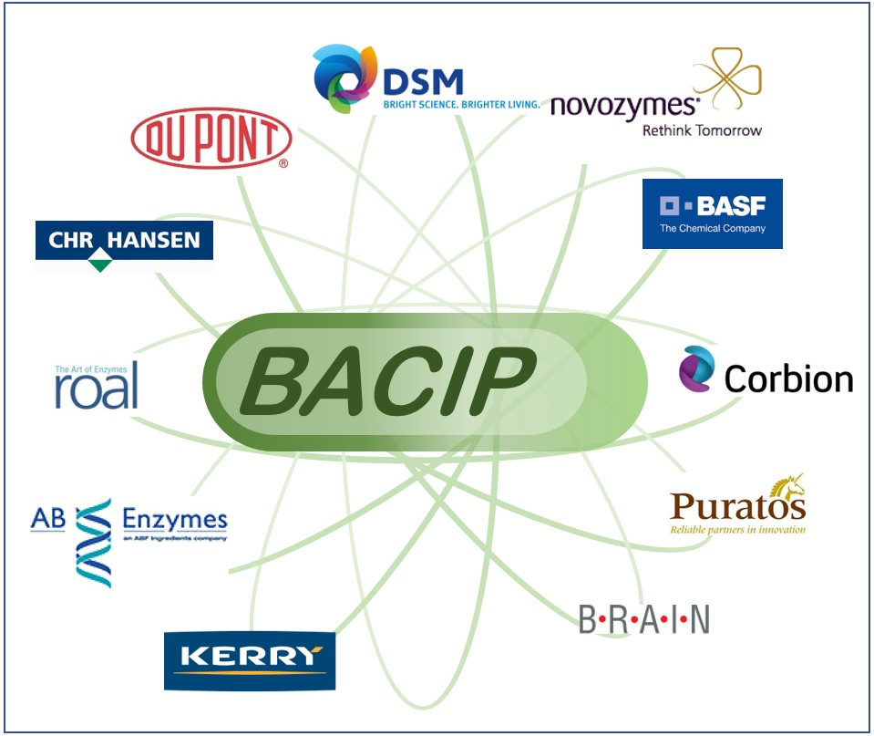

Calls for Abstructs - BACELL2020
- Use the provided abstract template , and follow the instruction as indicated.
- Put check marks to choose the oral or poster presentation, the presenter status, and the subject category.
- Prepared abstracts must be submitted as email-attachment to:bacell2020@outlook.jp.
- After the qualification, acceptance for presentation will be announced by the Christmas break 2019.
- Oral/poster presentations will be selected by January-February 2020.
- Registration will be open from Christmas break 2019 to March 2020.
- Any questions can be addressed to: bacell2020@outlook.jp
Deadline is 6th December 2019
.BACIP European student travel award
Thanking to the generous support of Bacillus Industrial Platform (BACIP), 10 European students will be able to enjoy 1,000 EUR of the travel award for each. The awardee will be selected based on the quality of the submitted abstracts.

Accommodation
Please arrange accommodation by yourself. There are a number of hotels and Inns available in Kobe, and you can check out hotels.com, booking.com, Airbnb.com, and so on. Below are some hotels for your reference:
- KOBE PORTOPIA HOTEL:https://www.portopia.co.jp/en/
- HOTEL PEARL CITY KOBE: https://www.pearlcity.jp/kobe/en/
- DAIWA ROYNET HOTEL KOBE SANNOMIYA: https://www.daiwaroynet.jp/english/kobesannomiya/
- HOTEL SUNROUTE SOPRA KOBE: https://www.sopra-kobe.com/en/
- KOBE SANNOMIYA TOKYU REI HOTEL: https://www.tokyuhotelsjapan.com/global/kobesannomiya-r/